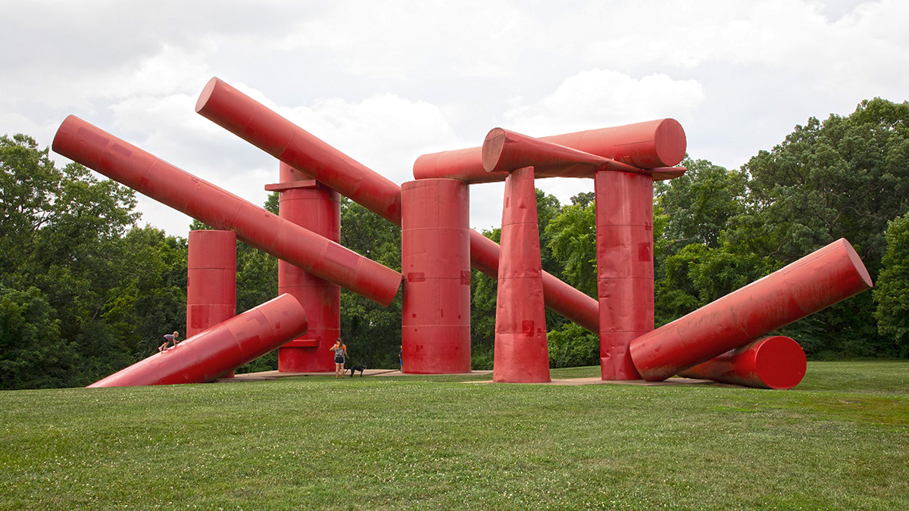
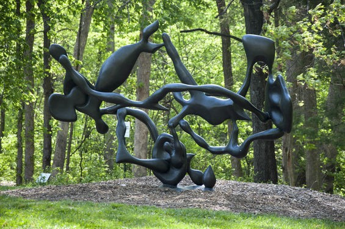

1 / 3

Caption Text
2 / 3

Caption Two
3 / 3

Caption Three
Going for walks is one of my favorite ways to get exercise. It's nice to have a good chill activity you can do almost anywhere. For me, the setting of my walk is extremely important as I love having something nice to look at and an environment I can engage with.